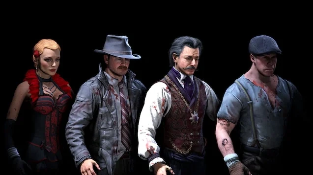

Arquivo 01
SOE
Arquivo 01
SOE
Morg City
Geheimakte 115
Um arquivo interativo dedicado aos mapas, personagens, armas, rituais e conexões de Black Ops III Zombies.
Arquivos disponíveis
Gire a vitrine para percorrer a jornada. Cada arquivo mantém seu próprio progresso, mecânica e identidade visual.
Arquivo 01
SOE
 Arquivo 02
935
Arquivo 02
935
 Arquivo 03
DE
Arquivo 03
DE
 Arquivo 04
ZNS
Arquivo 04
ZNS
 Arquivo 05
GK
Arquivo 05
GK
 Arquivo 06
REV
Arquivo 06
REV
Pessoas envolvidas
Cada personagem está ligado a um distrito, um objeto e um local de ritual. Selecione um nome para seguir a conexão.

Morg City · 1940Conexões do ciclo
Os arquivos não são páginas isoladas. Cada etapa abre a próxima ligação da jornada de Primis em Black Ops III.